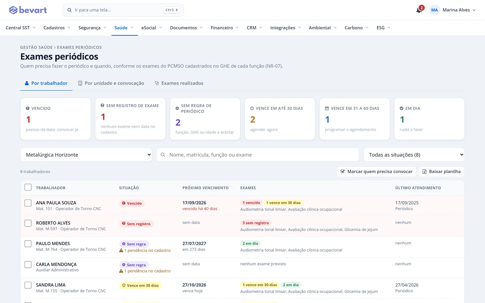
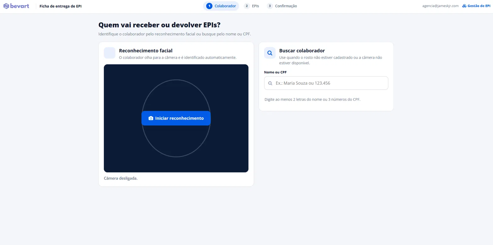

Inventário
Riscos da obra no PGR e no S-2240
Trabalho em altura, máquinas, ruído, poeira e acidentes registrados por GHE, com matriz de risco e plano de ação.

Alta rotatividade, vários canteiros e muitos terceiros. O Bevart organiza riscos, exames, treinamentos, EPI e eventos do eSocial por obra e por ambiente.
Cada fase da obra traz riscos novos, equipes novas e terceiros que precisam estar com ASO, treinamento e EPI em dia antes de entrar.
GHE e inventário por obra e por ambiente externo, com plano de ação e PGR da obra.
Documentos exigidos de cada contratada e validade por obra antes de liberar o acesso.
Periódicos, NR-18, NR-35 e NR-10 com vencimento visível e convocação automática.
Trabalho em altura, máquinas, ruído, poeira e acidentes registrados por GHE, com matriz de risco e plano de ação.
Quem está vencido ou vence nos próximos 30 e 60 dias, por unidade, com convocação automática.
Conheça o controle de periódicos
Reconhecimento facial pela câmera do tablet ou do celular, sem leitor de digital, com ficha em PDF e foto.
Veja a gestão de EPI
Sim. Cada obra pode ser uma unidade ou um ambiente externo, com GHEs, inventário de riscos, plano de ação e PGR próprios.
Pela gestão de terceiros: você define os documentos exigidos de cada contratada (ASO, treinamentos, ficha de EPI, ordem de serviço) e acompanha validade e pendências por obra.
Sim. Usa a câmera do tablet ou do celular, sem leitor biométrico, e não depende da digital, que costuma falhar com mão suja, calejada ou de luva.
Teste com uma obra e veja riscos, exames e EPI no mesmo painel.
5 dias com acesso completo · sem cartão de crédito